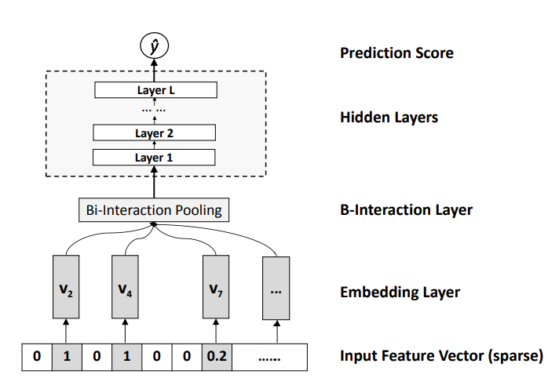

经典推荐模型:NFM
NFM将FM中的二阶交叉项替换成了一个神经网络，使得NFM能够进行二阶以及二阶之上的特征交叉，增强了模型的表达能力。
NFM模型如下：
其中的f(x)便是上面提及的用于替换FM中二阶交叉项的神经网络。
NFM的结构如下，注意，这里并没有画出来一阶部分，只展示了f(x)：

自下往上看。
将输入的稀疏特征向量经过Embedding层，得到对应的稠密编码向量。注意图中的$v_i,i=2,4,7,…$是一个n*k的矩阵，n是第i个特征域所含不同特征取值总数，k是Embedding的维度。
接下来进入BiInteraction Pooling层进行特征交叉，该层所执行的操作如下：
$x_iv_i$是一个长度为k的向量(k是Embedding的维度，其实这个向量就是第i个类别特征取值对应的Embedding向量)，$x_jv_j$同样也是一个长度为k的向量，两者做element-wise product，即使对应位置相乘，此时得到的还是一个长度为k的向量。在进行完所有特征交叉(即element-wise product操作)后，将得到的所有长度为k的向量进行相加，得到一个新的长度为k的向量，这就是BiInteraction Pooling层的输出。
到这里，其实还是只做了二阶交叉，别着急，继续向上，来到由全连接层堆叠的隐藏层，在这一层可以进行更高阶的特征交叉，操作如下：
将交叉后的结果(一个向量)经过Sigmoid函数(针对CTR预估问题，其他问题可灵活替换)映射，得到最终的预测结果。
以上仅仅针对稀疏的类别型特征，在实际使用时，可以将稠密的数值型特征与BiInteraction Pooling层的输出(维度为(batch_size, embedding_dim))进行拼接，拼接后的维度为(batch_size, embedding_dim+1)，其余不变。
现在，将f(x)这个神经网络与FM的一阶部分组合起来，就得到了整个NFM模型:
- [1] https://arxiv.org/pdf/1708.05027.pdf
- [2] https://www.bilibili.com/video/BV1Uf4y1h79x?spm_id_from=333.999.0.0
- [3] 王喆-《深度学习推荐系统》